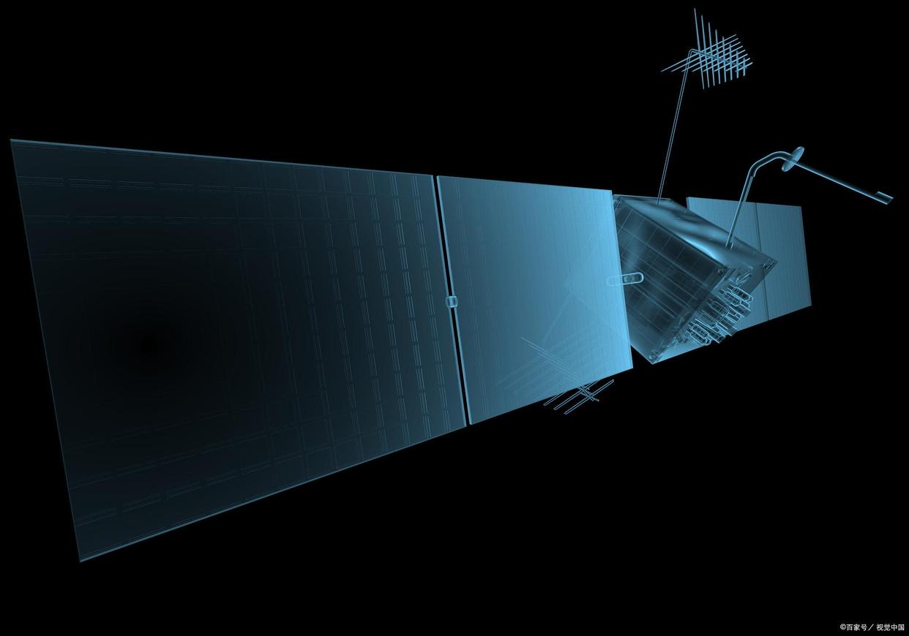

航天科普知识问答1
载人航天器各有什么用途？
信息来源: 人民网

宇宙飞船和航天飞机，主要用于接送航天员和货物，且在太空飞行时间一般不超过20天，又可称为天地往返运输器；空间站在太空长期运行，不返回地面，主要用于观天看地、研究空间科学、太空生产和在轨服务等。
火箭的故乡在哪里？
信息来源: 人民网
"火箭"最早的含义是"带火的箭"，出现在中国的三国时期。火药发明后，宋代兵家打仗时，就把火药筒绑在箭杆上，点燃引信后，靠火药喷火产生的反作用力使箭飞得更远，这种火箭已具有了现代火箭的雏形。世界公认，中国是火箭的故乡。
我国的神舟号飞船由几个舱段组成？
信息来源: 人民网
神舟号飞船是我国自主研制的载人飞船，采用"三舱一段"构型，即由轨道舱、返回舱、推进舱和附加段构成，推进舱和轨道舱上各有一对太阳能帆板。推进舱在飞船的最下部，返回舱在中间，轨道舱在上部，附加段在飞船的最顶端。
神舟号飞船由多少个分系统组成？
信息来源: 人民网

共有13个分系统：结构与机构、制导导航与控制、数据管理、测控通信、热控制、推进、电源、有效载荷、环境控制与生命保障、乘员、仪表照明、应急救生、回收着陆等。其中环境控制与生命保障、乘员、仪表照明、应急救生系统，在卫星上是没有的。